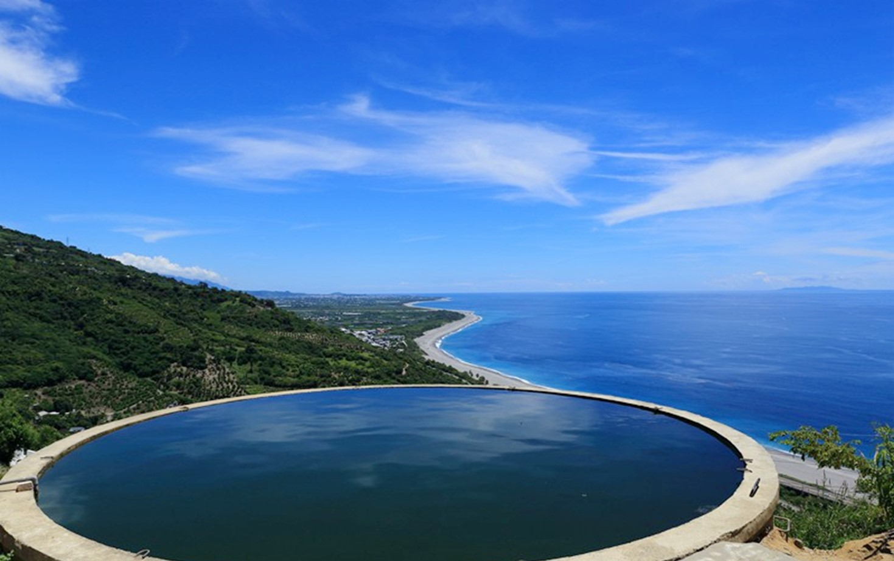

清水斷崖
-
地址:
臺灣花蓮縣秀林鄉
-
簡介:
位於花蓮縣秀林鄉和平至清水之間長達22.7公里的海岸斷崖，由於板塊發生碰撞，且不斷隆起，加上豐沛的雨水，上覆的岩層受風化侵蝕作用剝失，深處的大理岩和片麻岩於是逐漸抬升露出地表。再受到強烈的海蝕作用，坡度極陡，幾近垂直，這便是臺灣八景之一的清水斷崖形成的原因。
清水斷崖除了是花東沿岸最壯觀的景色以外，更是欣賞日出、日落的絕佳去處，是台灣著名的賞景地點。
七星潭
-
地址:
花蓮縣新城鄉北埔村
-
簡介:
七星潭又稱月牙灣，是花蓮縣唯一的縣級風景區，位於花蓮縣新城鄉北埔村，在花蓮機場的東側，七星潭是一個突出於美崙鼻一側的海灣；七星潭從前是花蓮發展定置漁業最興盛的地方，早年是真的有零星湖泊散佈，現在一般稱七星潭是指美崙工區和花蓮機場以北的地區，海岸線綿延20多公里，海灘寬度約在100公尺左右，大多都屬於礫石攤，讓七星潭成為花蓮近郊最佳的踏浪撿石好去處。
東大門夜市
-
地址:
花蓮縣花蓮市中山路50號
-
簡介:
占地約9公頃，區域包括「福町夜市」、「原住民一條街」、「大陸各省一條街」、「洄瀾之心(陽光電城)」等，合計約400個攤位。東大門夜市以洄瀾之心(陽光電城)為中心點發散出去，步道地磚特以黑、白花崗岩鋪設而成，縣府以最大格局與寬闊氣勢精心打造東大門夜市，期盼能成為花蓮的新熱門景點。
福町夜市：由原本的彩虹夜市轉型而成。
原住民一條街：以木竹為建材，整體帶有濃厚的原始風味，這區有許多其他夜市少見的原住民特色料理。
大陸各省一條街：則以紅磚搭配大紅燈籠，醞釀出懷舊氛圍，販售具有廣東、廣西、河南、河北、湖南及江西等各省的風味餐點，讓東大門夜市更增添多元的特色美食。
自強夜市：原位於吉安鄉自強路的「自強夜市」在2015年11月熄燈後，部份攤商於同年搬遷至東大門夜市繼續營業。
鐵花村音樂聚落慢市集
-
地址:
臺東縣臺東市新生路135巷26號
-
簡介:
鐵花村音樂聚落是由臺鐵貨倉宿舍改造而成的，在此可以聽著原民歌手高亢清亮的創作，享受山海文化孕育出澎湃的歌聲，喝上一杯鐵花吧的臺東特調，偷得浮生半日閒。而一旁的假日慢市集，販售著獨特的手作小物、農特產品，不妨與創作者、小農們聊聊天，感受臺東人的熱情與樂活自在的氛圍。
知本林道瀑布
-
地址:
台東縣卑南鄉知本林道約2公里處
-
簡介:
知本最著名就是森林遊樂區或溫泉等景點，而遊樂區對面的山區藏了一個在地人才知道的消暑秘境，「知本林道瀑布」，到達瀑布之前須繞過蜿蜒的小山路，這個瀑布也是少見就在路邊的瀑布，知本林道瀑布有個很大的特點，它可以說是全台灣最方便的瀑布，因為目前汽機車可以直接到達瀑布旁邊，完全不用任何走路。
華源觀景台-天空之鏡
-
地址:
台東縣太麻里鄉
-
簡介:
華源觀景台，下方的蓄水塔又有天空之鏡之稱，鏡子裡倒印出了天空的顏色，面對著華源海灣，這片海天一色的風景實在遼闊，山上是景觀台，而天空之鏡是在另一處空地，水塔很少見的接連著道路，所以很多人會跑到水塔上拍照。

靜宜大學 資料科學季大數據分析與應用學系 周鈺芳 鄭巧盈 蔡宜瑾 謝郁萱 製作